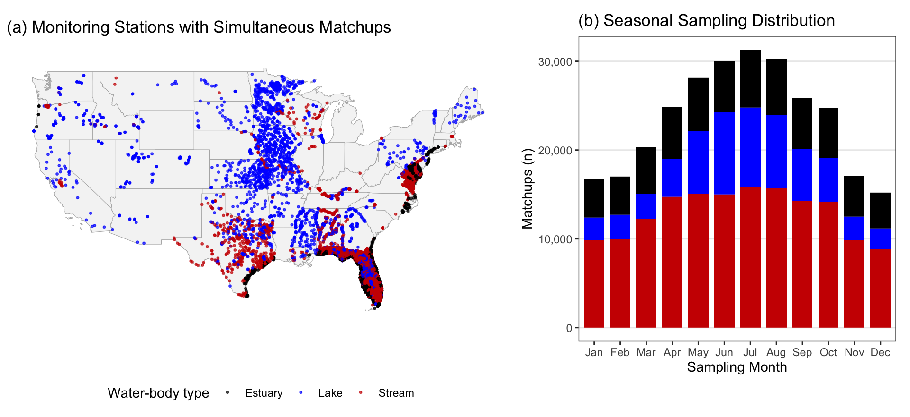
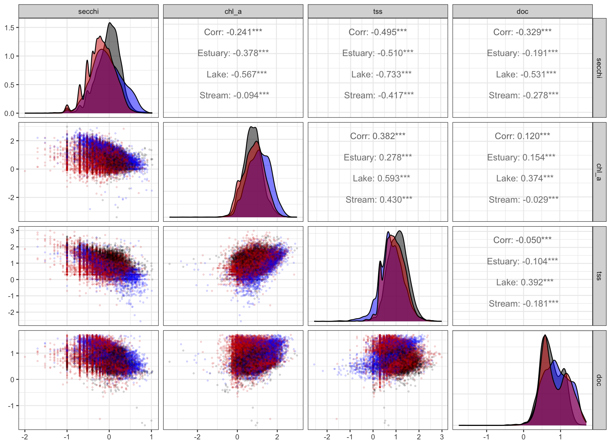

Section 2 Simultaneous Matchups & Initial Hygiene (prep.R)
To partition light attenuation among phytoplankton, non-algal particles, and dissolved organic carbon, we need field samples where chl_a, doc, and tss were collected on the same day at the same station (MonitoringLocationIdentifier and date)—which we refer to as matchups. Calibrating our bio-optical model additionally requires a same-day Secchi disk depth (secchi) measurement.
am <- get_aquamatch() # 490,209 joined 3-LAC records (1970–2025)
simul <- build_simultaneous(am, require_secchi = TRUE)
no_secchi <- build_simultaneous(am, require_secchi = FALSE)2.1 Four Initial Hygiene Filters
Before statistical screening, build_simultaneous() in R/prep.R applies four simple, deterministic hygiene rules:
- Ambient water bodies only: Excludes industrial/municipal
Facilityoutflows, retainingEstuary,Lake, andStreamsites. - True Secchi measurements (for 4-variable calibration): Requires
sdd_approx == 0(excluding turbidity tubes) andsdd_mdl <= 1(excluding \(\le 0.01\text{ m}\) floor placeholders). - Gross unit-error caps: Removes obvious \(1{,}000\times\) reporting-unit mixups (\(\mu\text{g L}^{-1}\) reported as \(\text{mg L}^{-1}\)): \(0 < z_{SD} < 15\text{ m}\), \(\text{Chl }a < 1000\ \mu\text{g L}^{-1}\), \(\text{TSS} < 1000\text{ mg L}^{-1}\), and \(\text{DOC} < 50\text{ mg L}^{-1}\).
- Same-day deduplication: Collapses duplicate agency uploads of the same bottle sample (
distinct(SiteID, date, secchi, chl_a, doc, tss)).
| Matchup Dataset | Streams | Lakes | Estuaries | Total Matchups |
|---|---|---|---|---|
| 4-Variable Training Matchups (Secchi + Chl a + DOC + TSS) | 155,471 | 61,593 | 64,375 | 281,439 |
| 3-Constituent Application Matchups (Chl a + DOC + TSS) | 322,623 | 84,954 | 79,112 | 486,689 |
Why Streams Have Twice as Many 3-Constituent Matchups as 4-Variable Matchups
Lake and estuary programs almost always lower a Secchi disk alongside water-chemistry bottles, whereas stream and river networks frequently sample chemistry (Chl a + DOC + TSS/SSC) without Secchi depth (151,125 4-variable vs. 311,057 3-constituent stream matchups). Because constituent distributions are nearly identical with or without paired Secchi depth (Figure 1a), our calibrated regional model can partition light attenuation across all 479,666 3-constituent matchups without extrapolating beyond the calibration domain.
2.2 Spatial & Seasonal Footprint of Matchups
Across the conterminous U.S., 88.1% of calibration matchups lie east of \(-90^\circ\text{ W}\) and 11.9% (32,713 matchups across 2,909 stations) lie in the western U.S.:

Figure 2.1: Spatial distribution of simultaneous monitoring stations across the conterminous United States (a) and seasonal sampling distribution by month (b).
2.3 Log-Log Covariance Structure
Log-log distributions across a 10% random subsample show the strong negative scaling between secchi and each constituent (chl_a, tss, doc), as well as the positive coupling between chl_a and bulk tss—which motivates subtracting living phytoplankton biomass from bulk TSS in Section 3:

Figure 2.2: Log-log bivariate scatter and density matrix across a 10% random sample of 4-variable matchups.